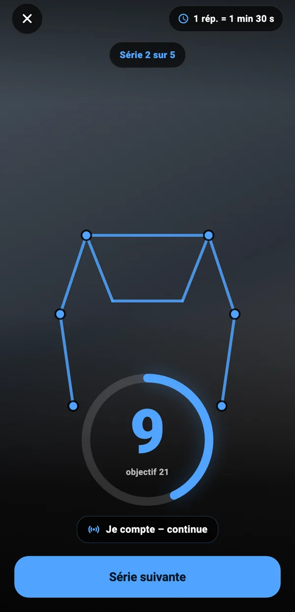
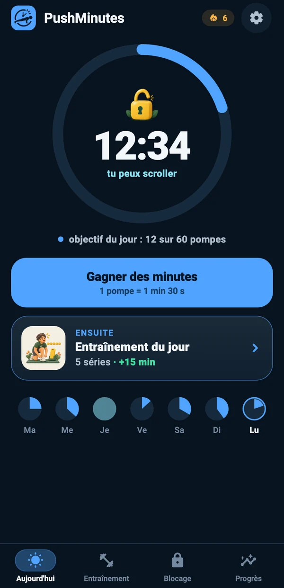
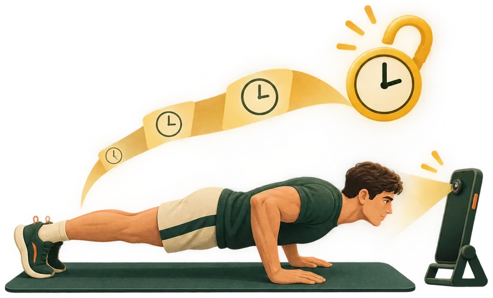
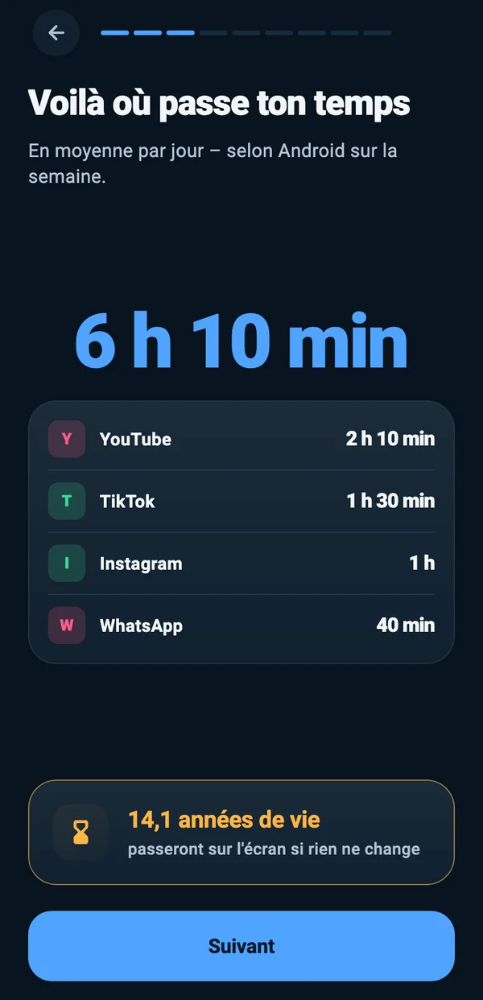
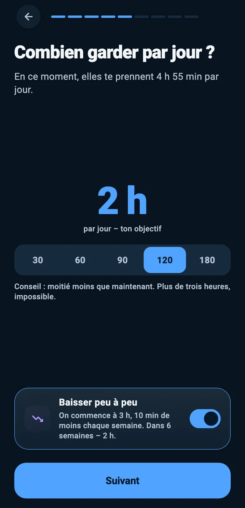
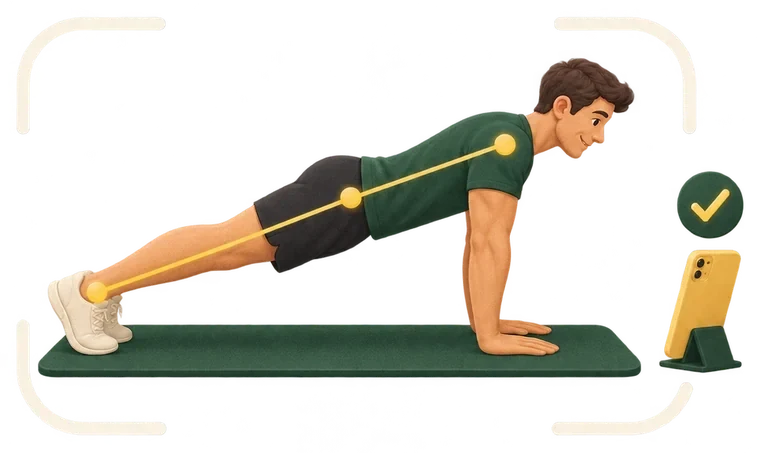
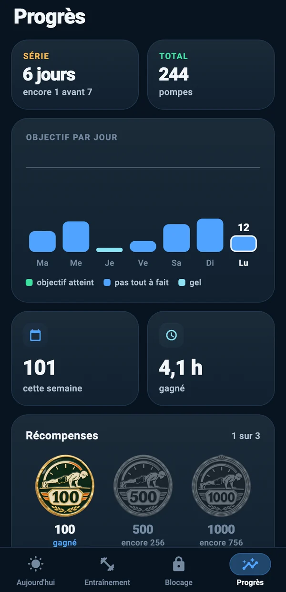
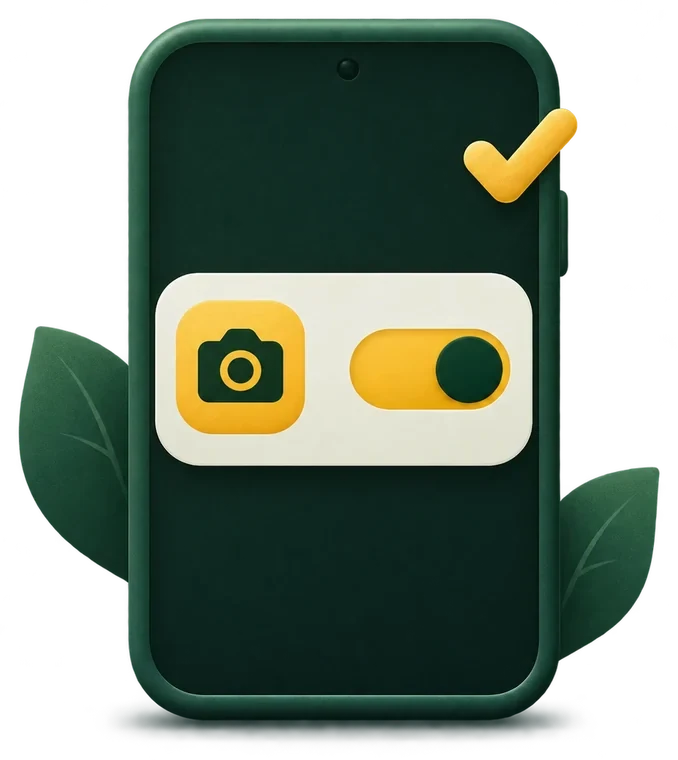

Envie de scroller ?Gagne-le d'abord
PushMinutes bloque les applis qui dévorent ton temps. Des pompes et des squats les rouvrent – la caméra du téléphone compte chaque répétition.
Android 7.0 ou plus récent · 14 jours gratuits, sans carte



Chaque répétition rapporte des minutes.
Le prix est simple : ta limite du jour divisée par ton objectif du jour. Objectif atteint – toute la limite est à toi. Moins de répétitions – moins de minutes.
Comment ça marche
Trois étapes jusqu'à la première minute gagnée.
- 01
Regarde où part ton temps
PushMinutes lit les statistiques d'utilisation d'Android et affiche le vrai chiffre – par appli et par jour.

- 02
Décide combien tu gardes
Choisis une limite quotidienne entre 30 minutes et 3 heures. L'appli démarre près de ton temps actuel et peut baisser la limite de 10 minutes par semaine.

- 03
Gagne-le au sol
Pose le téléphone à environ deux mètres. La caméra compte les pompes ou les squats, et chaque répétition ajoute des minutes.
Comptage honnête
Seules les répétitions complètes comptent.
Le compteur a été réglé sur de vrais enregistrements, tentatives de triche comprises.
Compte
- Pompes complètes : poitrine en bas, puis retour
- Squats profonds – deux squats valent une pompe
- Pompes sur les genoux – dans un mode débutant à part
- Téléphone en face ou sur le côté
Ne compte pas
- Demi-répétitions
- Hochements de tête devant la caméra
- Pompes sur les genoux déguisées en pompes classiques



Habitude
Conçu pour durer.
- Objectif du jour
- Atteins-le et toute ta limite du jour s'ouvre. Un seul objectif pour les pompes et les squats.
- Séries avec jour de gel
- Un jour manqué par semaine ne casse pas la série.
- Mode strict
- Désactiver le blocage coûte au moins 120 pompes en une séance. Difficile dans un moment de faiblesse.
- Minutes d'urgence
- Une fois par jour, quand tu as vraiment besoin du téléphone.
- Temps gagné
- Tu vois combien tu scrolles de moins qu'avant.

Confidentialité
Rien ne quitte ton téléphone.
- Aucune vidéo n'est enregistrée ni envoyée. La détection de la pose se fait sur l'appareil.
- Pas de compte, pas d'inscription.
- Pas de publicité, pas d'outils d'analyse.
- L'appli elle-même n'a pas d'accès à Internet.
14 jours gratuits. Sans carte.
Ensuite, PushMinutes demande un abonnement payant à renouvellement automatique. Le prix est affiché dans l'appli avant le paiement, et tu peux résilier à tout moment dans Google Play.
Questions
En bref.
La caméra me filme-t-elle ?
Non. Chaque image est analysée sur le téléphone puis supprimée aussitôt. Rien n'est enregistré ni envoyé.
Et si je n'arrive pas à faire une seule pompe ?
Commence par des pompes sur les genoux ou des squats. L'objectif du jour s'adapte à ton niveau.
Puis-je simplement désactiver le blocage ?
Oui. Mais en mode strict, cela coûte au moins 120 pompes en une séance. C'est toi qui choisis le mode strict pendant la configuration.
Quelles applis peut-on bloquer ?
N'importe quelle appli du téléphone : réseaux sociaux, vidéo, jeux, navigateurs. Les messageries restent ouvertes, sauf si tu en décides autrement.
Existe-t-il une version iPhone ?
Pas encore. Elle est en préparation.
Est-ce sans risque pour la santé ?
Les pompes et les squats sont un effort physique. En cas de doute sur ta santé, parle d'abord à un médecin. PushMinutes n'est pas un dispositif médical.